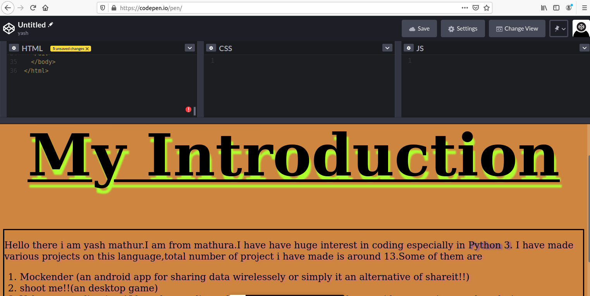
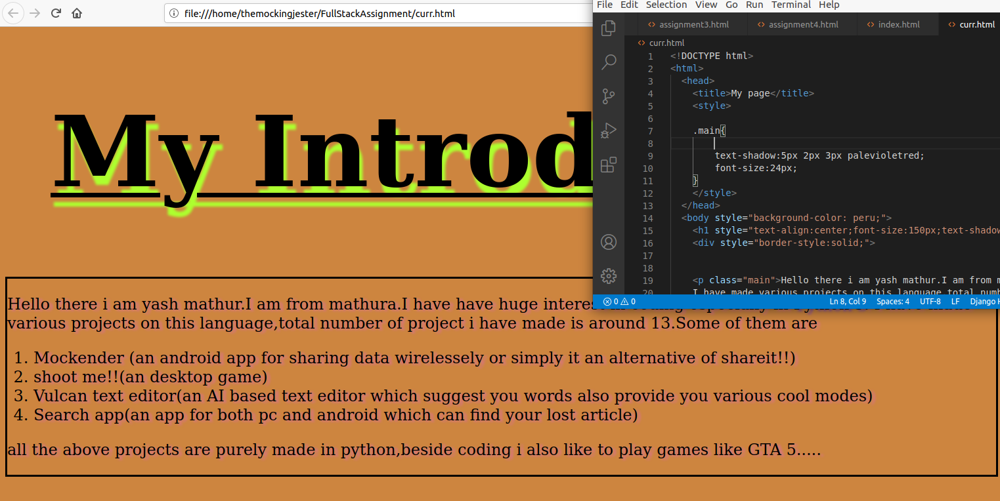

Practical-1: Create a Web page including HTML baasic skeleton using Offline HTML Editor and Online Sandbox Environment.
Welcome to Fullstack Course
About Course
Front-end web development is everything involved in programming the user interface of a web application.
Typically it refers to the Hypertext Markup Language(HTML), Cascading Style Sheets(CSS) and JavaScript portion
of website production as opposed to the database or server-side programming. It encompasses everytihng from
building a simple page of HTML text to creating complex, responsive HTML5 websites designed to be accessed via
various different browsers, devices and screen sizes.
Output
Online HTML Editor: Codepan

Offline HTML Editor: VSCode Editor
